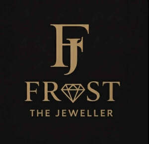

Trade Mark Journal No.2026/006 6 February 2026
UK00004325832 18 January 2026 (14,37)

- Class 14
- Jewellery; Enamelled jewellery; Jewellery, including imitation jewellery and plastic jewellery; Cloisonné jewellery; Brooches [jewellery]; Jewellery brooches; Gold jewellery; Jewellery chain; Agate as jewellery; Jewellery stones; Pearls [jewellery]; Jade [jewellery]; Pendants [jewellery]; Pewter jewellery; Clasps for jewellery; Diamond jewelry; Rings being jewellery; Rings [jewellery]; Cloisonne jewellery; Charms [jewellery]; Charms for jewellery; Jewellery charms; Cloisonné jewellery [jewelry (Am.)]; Lockets [jewellery]; Fashion jewellery; Jewellery incorporating diamonds; Jewellery in semi-precious metals; Brooches [jewellery, jewelry (Am.)]; Ornaments [jewellery]; Pearls [jewellery, jewelry (Am.)]; Jewellery chains; Chains [jewellery]; Necklaces [jewellery]; Imitation jewellery; Sterling silver jewellery; Jewelry; Trinkets [jewellery]; Bracelets [jewellery]; Amulets being jewellery; Amulets [jewellery]; Jewellery fashioned of semi-precious stones; Ring bands [jewellery]; Shoe jewellery; Rings [jewellery, jewelry (Am.)]; Decorative brooches [jewellery]; Chains [jewellery, jewelry (Am.)]; Charms [jewellery, jewelry (Am.)]; Hat jewellery; Gold plated brooches [jewellery]; Jewellery in non-precious metals; Medallions [jewellery, jewelry (Am.)]; Jewellery fashioned from non-precious metals; Brooches [jewelry]; Jewelry brooches; Brooches being jewelry; Costume jewellery; Lockets [jewellery, jewelry (Am.)]; Trinkets [jewellery, jewelry (Am.)]; Ornaments [jewellery, jewelry (Am.)]; Amberoid pendants being jewellery; Jewellery fashioned from bronze; Precious jewellery; Ivory jewellery; Cabochons for making jewellery; Amulets [jewellery, jewelry (Am.)]; Jewellery made from gold; Fake jewellery; Ivory [jewellery, jewelry (Am.)]; Synthetic stones [jewellery]; Bracelets [jewellery, jewelry (Am.)]; Amber pendants being jewellery; Necklaces [jewellery, jewelry (Am.)]; Imitation jewellery ornaments; Jewellery made from silver; Paste jewellery; Jewellery (Paste -); Cloisonné jewelry; Rings [jewellery] made of non-precious metal; Gold thread [jewellery, jewelry (Am.)]; Jewellery chain of precious metal for necklaces; Pins [jewellery, jewelry (Am.)]; Jewellry; Jewellery made of glass; Pearls [jewelry]; Pins [jewellery]; Pins being jewellery; Crucifixes as jewellery; Jewellery fashioned of cultured pearls; Jewellery caskets; Wristlets [jewellery]; Jewellery chain of precious metal for bracelets; Jewellery incorporating pearls; Silver thread [jewellery, jewelry (Am.)]; Clasps for jewelry; Jewelry stickpins; Jewellery chain of precious metal for anklets; Jewellery made of non-precious metal; Items of jewellery; Jewellery items; Pendants [jewelry]; Paste jewellery [costume jewelry (Am.)]; Paste jewellery [costume jewelry [Am.]]; Jewellery made of bronze; Wire of precious metal [jewellery, jewelry (Am.)]; Jewellery fashioned of precious metals; Collets being parts of jewellery; Jewellery for personal adornment; Gold thread [jewellery]; Platinum jewelry; Jewellery in precious metals; Jewellery of precious metals; Plastic costume jewellery; Clips of silver [jewellery]; Rings [jewelry]; Crosses [jewellery]; Silver thread [jewellery]; Jewelry (Paste -) [costume jewelry]; Paste jewelry [costume jewelry]; Jewellery made of crystal; Jewellery findings; Body jewellery; Charms for jewelry; Rings [jewellery] made of precious metal; Jewellery in the form of beads; Charms [jewelry]; Jewelry charms; Artificial jewellery; Beads for making jewellery; Personal jewellery.
- Class 37
- Remounting of jewellery; Jewellery remounting; Jewellery repair; Repair of jewellery; Polishing of jewellery; Jewellery cleaning.
RENECIA FOSTER